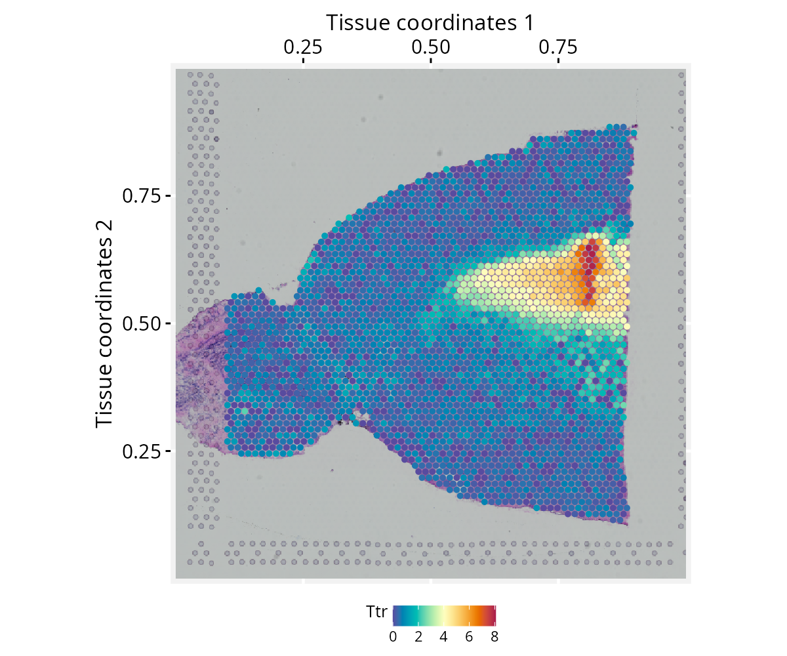
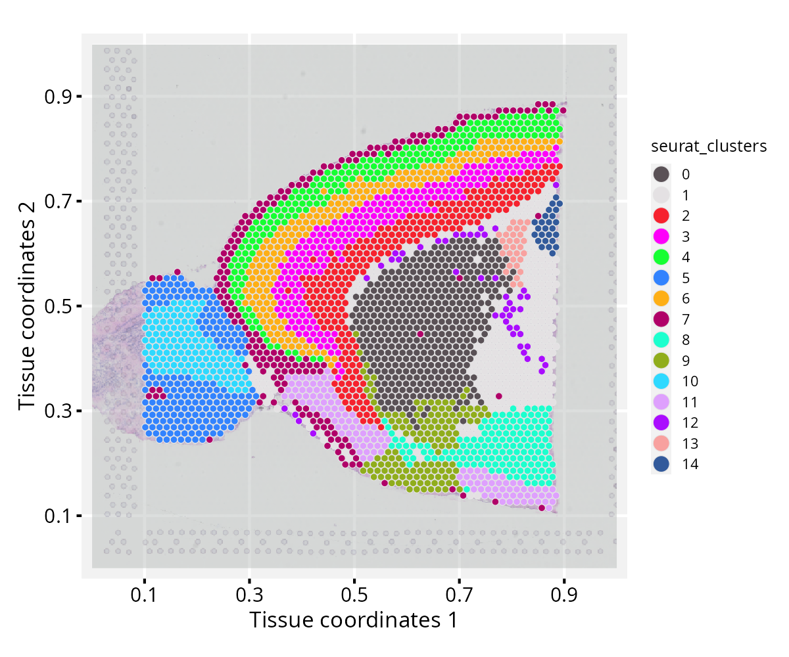

Extending ggplot2 Grammar to Spatial Transcriptomics Data
Sysbiolab Team
2026-06-21
Source:vignettes/articles/spatial-data.Rmd
spatial-data.RmdPackage: RGraphSpace 1.4.1
Overview
This vignette demonstrates how RGraphSpace extends the
ggplot2 grammar to spatial transcriptomics data. We use spatial
data from the SeuratData package to illustrate direct mapping
of spatial variables to ggplot2 aesthetics via the
ggplot-GraphSpace interface.
Before you start
This vignette assumes familiarity with Seurat (Hao et al. 2024), particularly for handling spatial transcriptomics data.
Note: If you are new to Seurat, we recommend reviewing its spatial analysis tutorials before proceeding.
Computational requirement:
Hardware: RAM >= 16 GB
Software: R (>=4.5) and RStudio
Required packages
Before proceeding, ensure that all packages described in the Installation Instructions are installed.
# Check versions
if (packageVersion("RGraphSpace") < "1.4.1"){
message("Need to update 'RGraphSpace' for this vignette")
remotes::install_github("sysbiolab/RGraphSpace")
}
if (packageVersion("Seurat") < "5.5.0"){
message("Need to update 'Seurat' for this vignette")
remotes::install_github("satijalab/Seurat")
}Setting input data
# Load packages
library("RGraphSpace")
library("Seurat")
library("SeuratObject")
library("SeuratData")Loading the dataset
We will use the stxBrain dataset from the
SeuratData package, consisting of spatial transcriptomics data
from sagittal mouse brain sections generated with Visium v1 technology.
This dataset is commonly used to demonstrate Seurat spatial
workflows (Hao et al. 2024). We apply
as.GraphSpace() to coerce the Seurat object
into a GraphSpace and show how spatial high-dimensional
variables can be mapped directly to ggplot2 aesthetics,
anchored to the tissue image from which the data were sampled.
# Install a Seurat dataset (required only once)
SeuratData::InstallData("stxBrain")
# Check manifest of installed datasets
# SeuratData::InstalledData()
# Load the 'stxBrain' dataset
# Note: LoadData() may print conversion warnings when loading pbmc3k.
# These are expected and come from SeuratData's internal v4-to-v5
# object migration — they can be safely ignored.
seurat_obj <- LoadData("stxBrain", type = "anterior1")Preprocessing
The stxBrain dataset is normalized as suggested in
Seurat’s spatial_vignette, either using the
SCTransform() and NormalizeData()
functions.
# NOTE: Seurat recommends using SCTransform() for processing this
# spatial dataset, which may require more computation time. Here,
# we use log-normalization for demonstration purposes.
seurat_obj <- NormalizeData(seurat_obj)Creating a GraphSpace object
Next, we create a GraphSpace from the
Seurat object; the as.GraphSpace() converts
the Seurat object into a GraphSpace, exposing its
spatial coordinates and feature data to the ggplot2 grammar. We
then attach the tissue image and normalize node coordinates to the image
space.
# Create a GraphSpace from 'seurat_obj'
gs <- as.GraphSpace(seurat_obj, space = "spatial", scale = "lowres")
# Seurat object converted to GraphSpace:
# ℹ space=spatial, layer=default, features=31053, samples=2696, scale="lowres"
# Node spatial boundaries:
# ℹ x: [76, 493] (cols)
# ℹ y: [138, 541] (rows)
# If available, add tissue image
gs_image(gs) <- SeuratObject::GetImage(seurat_obj, mode = "raster")
# Image spatial boundaries:
# ℹ x: [1, 600] (cols)
# ℹ y: [1, 599] (rows)
# Normalize node coordinates to the image space
gs <- normalizeGraphSpace(gs)
# Normalizing node coordinates to image space...
# Flipping y-coordinates...
gs
# A GraphSpace-class object for:
# IGRAPH c4b5fdf UN-- 2696 0 --
# + attr: x (v/n), y (v/n), name (v/c), nodeLabel (v/c), nodeSize (v/n), cell (v/c),
# | orig.ident (v/x), nCount_Spatial (v/n), nFeature_Spatial (v/n), slice (v/n), region
# | (v/c), arrowType (e/n)
# + features: 31053 (Xkr4, Gm1992, Gm37381, Rp1, ...)Spatial feature visualization
With the GraphSpace object ready, we can reproduce a
typical Seurat spatial feature plot using standard
ggplot2 syntax. Here we map expression of the Ttr
gene to the colour aesthetic and display the tissue image as a
background reference.
cpal <- hcl.colors(100, palette = "Spectral", rev = TRUE)
# Reproduce a typical Seurat's spatial feature visualization
ggplot(gs) +
annotation_gspace_image(gs) +
geom_nodespace(mapping = aes(colour = Ttr), size = 1, pch = 19) +
scale_colour_continuous(palette = cpal) +
theme_gspace_coords(theme = "th3", is_norm = TRUE,
xlab = "Tissue coordinates 1", ylab = "Tissue coordinates 2")
Note on image alignment: Proper spatial alignment
between nodes and the background image requires consistent coordinate
conventions. Spatial misalignment may occur if the input image and node
coordinates differ in axis orientation (e.g., top-left versus
bottom-left origins). To accommodate these differences,
normalizeGraphSpace() provides orientation controls through
the rotate.xy, flip.x, and flip.y
arguments. If the nodes appear misaligned with the input image, try
combinations of these parameters to correct the alignment.
Alternatively, try flip.v and flip.h arguments
to apply flipping directly to the background image.
Spatial cluster visualization
This section requires additional preprocessing of the
stxBrain dataset, including normalization with
SCTransform() and Seurat’s clustering workflow. We
recommend installing the glmGamPoi package beforehand, as it
substantially speeds up the SCTransform() estimation
step.
Preprocessing
if (!require("glmGamPoi", quietly = TRUE)){
BiocManager::install("glmGamPoi")
}
# Run vst normalization on counts
seurat_obj <- SCTransform(seurat_obj, assay = "Spatial", verbose = FALSE)
seurat_obj <- RunPCA(seurat_obj, assay = "SCT", verbose = FALSE)
seurat_obj <- FindNeighbors(seurat_obj, reduction = "pca", dims = 1:30)
seurat_obj <- FindClusters(seurat_obj, verbose = FALSE)Spatial cluster visualization
With clusters assigned, we rebuild the GraphSpace object
from the updated seurat_obj and reproduce a typical Seurat
spatial cluster plot, mapping cluster identity to the fill
aesthetic and overlaying the tissue image as a dimmed background.
# Re-create a GraphSpace from the updated 'seurat_obj'
gs <- as.GraphSpace(seurat_obj, space = "spatial", scale = "lowres")
gs_image(gs) <- SeuratObject::GetImage(seurat_obj, mode = "raster")
gs <- normalizeGraphSpace(gs)
# Reproduce a typical Seurat cluster visualization
cpal <- DiscretePalette(nlevels(gs$seurat_clusters), palette = "polychrome")
ggplot(gs) +
annotation_gspace_image(gs, opacity = 0.5) +
geom_nodespace(mapping = aes(fill = seurat_clusters),
size = 1.3, color = "grey90", stroke = 0.3) +
scale_fill_manual(values = cpal) +
theme_gspace_coords(theme = "th2", is_norm = TRUE,
xlab = "Tissue coordinates 1", ylab = "Tissue coordinates 2") +
theme_gspace_legend(discrete_fill = TRUE)
Coercing spatial data
Below, we show how to access the relevant components of a
Seurat object and use them to construct a
GraphSpace manually, without relying on
as.GraphSpace(). For another coercion example, see the high-dimensional
data tutorial.
# Extract tissue coordinates
coords <- SeuratObject::GetTissueCoordinates(object = seurat_obj, scale = "lowres")
coords <- as.data.frame(coords)
all(c("x", "y") %in% colnames(coords))
# [1] TRUE
# Extract cell metadata
metadata <- seurat_obj[[]]
# Merge coordinates and metadata using common cell identifiers
ids <- intersect(rownames(coords), rownames(metadata))
coords <- cbind(coords[ids, ], metadata[ids, ])
# Construct a GraphSpace object
# Metadata become node attributes
gs <- GraphSpace(coords)
# Add high-dimensional feature data
# Stored separately for lazy aesthetic mapping
gs_fdata(gs) <- SeuratObject::LayerData(seurat_obj, layer = "data")
# If available, add tissue image
gs_image(gs) <- SeuratObject::GetImage(seurat_obj, mode = "raster")
# Normalize node coordinates to the image space
gs <- normalizeGraphSpace(gs)Session information
#> R version 4.6.0 (2026-04-24)
#> Platform: x86_64-pc-linux-gnu
#> Running under: Ubuntu 24.04.4 LTS
#>
#> Matrix products: default
#> BLAS: /usr/lib/x86_64-linux-gnu/openblas-pthread/libblas.so.3
#> LAPACK: /usr/lib/x86_64-linux-gnu/openblas-pthread/libopenblasp-r0.3.26.so; LAPACK version 3.12.0
#>
#> locale:
#> [1] LC_CTYPE=en_US.UTF-8 LC_NUMERIC=C
#> [3] LC_TIME=en_US.UTF-8 LC_COLLATE=en_US.UTF-8
#> [5] LC_MONETARY=en_US.UTF-8 LC_MESSAGES=en_US.UTF-8
#> [7] LC_PAPER=en_US.UTF-8 LC_NAME=C
#> [9] LC_ADDRESS=C LC_TELEPHONE=C
#> [11] LC_MEASUREMENT=en_US.UTF-8 LC_IDENTIFICATION=C
#>
#> time zone: America/Sao_Paulo
#> tzcode source: system (glibc)
#>
#> attached base packages:
#> [1] stats graphics grDevices utils datasets methods base
#>
#> other attached packages:
#> [1] stxBrain.SeuratData_0.1.2 ssHippo.SeuratData_3.1.4
#> [3] pbmc3k.SeuratData_3.1.4 SeuratData_0.2.2.9002
#> [5] Seurat_5.5.0 SeuratObject_5.4.0
#> [7] sp_2.2-1 RGraphSpace_1.4.1
#> [9] ggplot2_4.0.3
#>
#> loaded via a namespace (and not attached):
#> [1] RColorBrewer_1.1-3 rstudioapi_0.18.0 jsonlite_2.0.0
#> [4] magrittr_2.0.5 spatstat.utils_3.2-3 ggbeeswarm_0.7.3
#> [7] farver_2.1.2 rmarkdown_2.31 fs_2.1.0
#> [10] ragg_1.5.2 vctrs_0.7.3 ROCR_1.0-12
#> [13] spatstat.explore_3.8-1 htmltools_0.5.9 sass_0.4.10
#> [16] sctransform_0.4.3 parallelly_1.47.0 KernSmooth_2.23-26
#> [19] bslib_0.11.0 htmlwidgets_1.6.4 desc_1.4.3
#> [22] ica_1.0-3 fontawesome_0.5.3 plyr_1.8.9
#> [25] plotly_4.12.0 zoo_1.8-15 cachem_1.1.0
#> [28] igraph_2.3.2 mime_0.13 lifecycle_1.0.5
#> [31] pkgconfig_2.0.3 Matrix_1.7-5 R6_2.6.1
#> [34] fastmap_1.2.0 fitdistrplus_1.2-6 future_1.70.0
#> [37] shiny_1.13.0 digest_0.6.39 patchwork_1.3.2
#> [40] tensor_1.5.1 RSpectra_0.16-2 irlba_2.3.7
#> [43] textshaping_1.0.5 progressr_0.19.0 spatstat.sparse_3.2-0
#> [46] httr_1.4.8 polyclip_1.10-7 abind_1.4-8
#> [49] compiler_4.6.0 withr_3.0.2 S7_0.2.2
#> [52] fastDummies_1.7.6 MASS_7.3-65 rappdirs_0.3.4
#> [55] tools_4.6.0 vipor_0.4.7 lmtest_0.9-40
#> [58] otel_0.2.0 beeswarm_0.4.0 httpuv_1.6.17
#> [61] future.apply_1.20.2 goftest_1.2-3 glue_1.8.1
#> [64] nlme_3.1-169 promises_1.5.0 grid_4.6.0
#> [67] Rtsne_0.17 cluster_2.1.8.2 reshape2_1.4.5
#> [70] generics_0.1.4 gtable_0.3.6 spatstat.data_3.1-9
#> [73] tidyr_1.3.2 data.table_1.18.4 tidygraph_1.3.1
#> [76] spatstat.geom_3.8-1 RcppAnnoy_0.0.23 ggrepel_0.9.8
#> [79] RANN_2.6.2 pillar_1.11.1 stringr_1.6.0
#> [82] spam_2.11-4 RcppHNSW_0.7.0 later_1.4.8
#> [85] splines_4.6.0 dplyr_1.2.1 lattice_0.22-9
#> [88] survival_3.8-6 deldir_2.0-4 tidyselect_1.2.1
#> [91] miniUI_0.1.2 pbapply_1.7-4 knitr_1.51
#> [94] gridExtra_2.3 scattermore_1.2 xfun_0.58
#> [97] matrixStats_1.5.0 stringi_1.8.7 lazyeval_0.2.3
#> [100] yaml_2.3.12 evaluate_1.0.5 codetools_0.2-20
#> [103] tibble_3.3.1 cli_3.6.6 uwot_0.2.4
#> [106] xtable_1.8-8 reticulate_1.46.0 systemfonts_1.3.2
#> [109] jquerylib_0.1.4 Rcpp_1.1.1-1.1 globals_0.19.1
#> [112] spatstat.random_3.5-0 png_0.1-9 ggrastr_1.0.2
#> [115] spatstat.univar_3.2-0 parallel_4.6.0 pkgdown_2.2.0
#> [118] dotCall64_1.2 listenv_0.10.1 viridisLite_0.4.3
#> [121] scales_1.4.0 ggridges_0.5.7 crayon_1.5.3
#> [124] purrr_1.2.2 rlang_1.2.0 cowplot_1.2.0